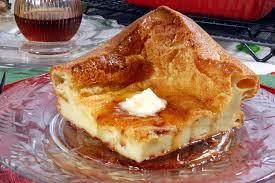

Oven Pancakes

A very short intro to the world of oven pancakes
Ingredients
- 3 tbl spoons white sugar
- 1/2 teaspoon ground cinnamon
- 1/3 cup butter
- 4 eggs
- 1 cup milk
- 1 cup all purpose flour
- 1 tbl spoon confectioners' sugar
Directions
- Preheat oven to 425 degrees. in a small bowl,
mix together white sugar and cinnamon; set aside.
- Place butter in a 9 inch cake pan and heat in the oven until melted. In a blender or food processor, whip eggs and milk. Pour in flour and beat until well combined. Pour batter into hot pan. Sprinkle on sugar and cinnamon.
- Bake in preheated oven for 20 to 25 minutes, or until puffed and golden. Dust with confectioners' sugar; serve warm.